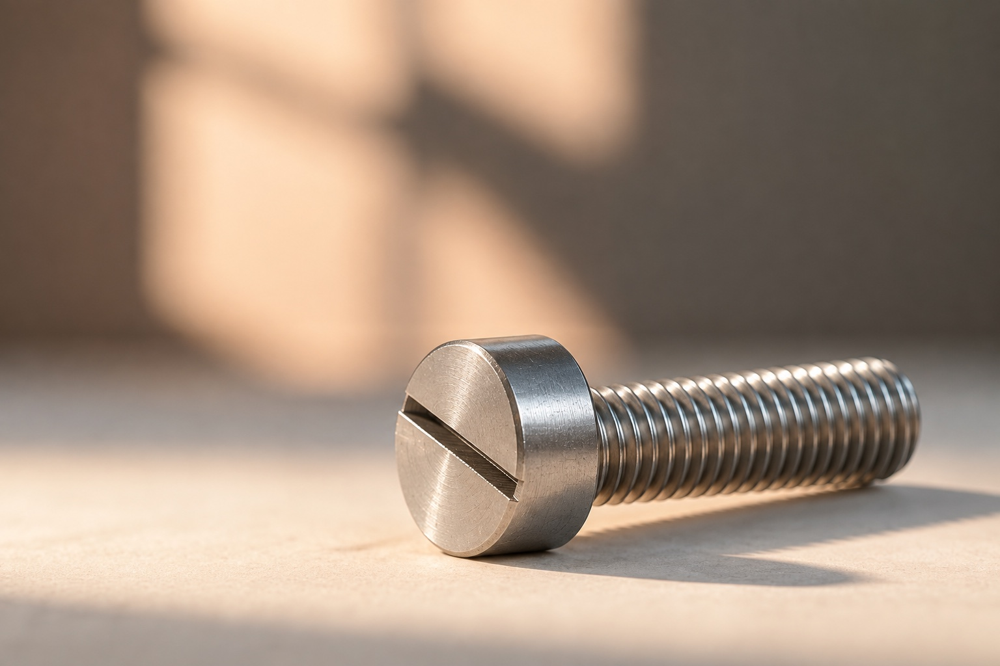
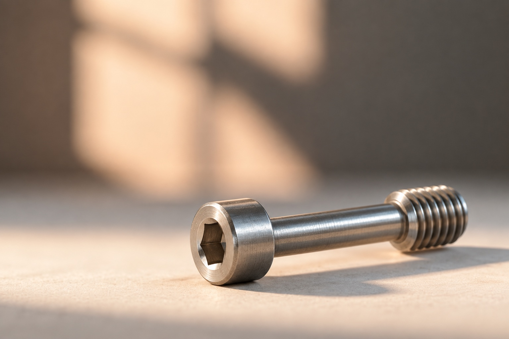
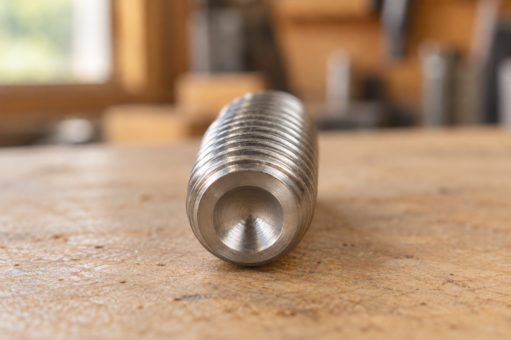
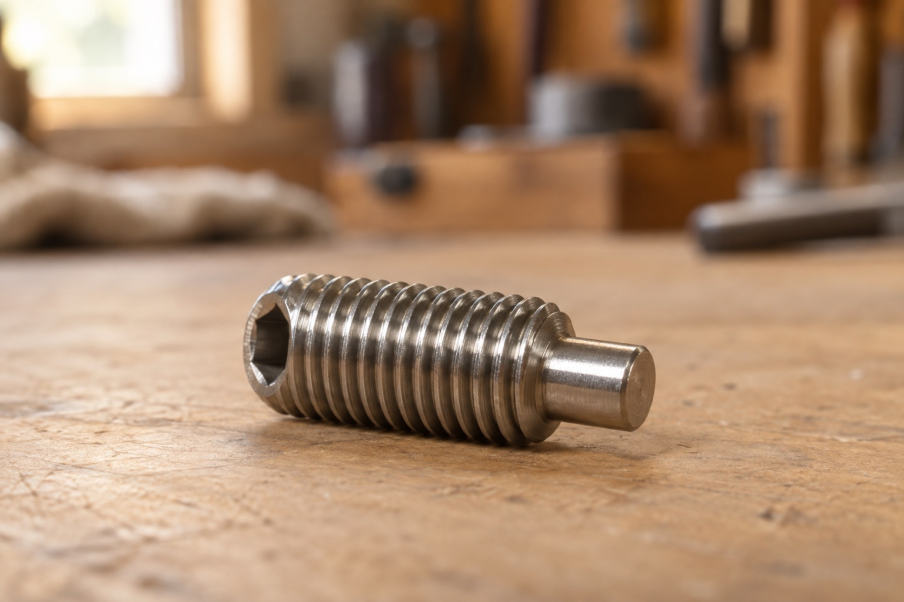

螺钉
内六角、机螺钉、紧定、肩部、手拧、组合、自攻与钻尾螺钉。
产品系列
按头型浏览
按驱动形式浏览
全部产品
内六角沉头螺钉
ISO 10642:2026
沉头可实现齐平安装，采用内六角驱动。请提供所需规格以便报价。

圆柱头内六角螺丝
图纸／规格要求
内六角驱动，适用于机械装配；根据安装空间与支承面选择头型。

半圆头内六角螺丝
图纸／规格要求
内六角驱动，适用于机械装配；根据安装空间与支承面选择头型。

薄头／矮头内六角螺丝
图纸／规格要求
内六角驱动，适用于机械装配；根据安装空间与支承面选择头型。

十字沉头机牙螺钉
图纸／规格要求
机牙螺钉用于螺纹孔或配套螺母连接，按装配需求选择槽型和头型。

一字槽圆柱头螺钉
图纸／规格要求
机牙螺钉用于螺纹孔或配套螺母连接，按装配需求选择槽型和头型。
平端内六角紧定螺钉
图纸／规格要求
无头螺纹紧固件，平端接触面用于零件定位或固定。

肩螺钉／塞打螺丝
图纸／规格要求
光杆提供定位配合面；杆径、配合及螺纹尺寸按图纸确认。

滚花手拧螺丝
图纸／规格要求
滚花头便于手动调节及可拆卸盖板固定，无需单独的拧紧工具。

带平弹垫组合螺丝
图纸／规格要求
组合式紧固件在安装及维护时保持垫圈或螺丝本体，减少零件散落。

松不脱螺丝
图纸／规格要求
组合式紧固件在安装及维护时保持垫圈或螺丝本体，减少零件散落。

内六角法兰螺丝
图纸／规格要求
内六角驱动，适用于机械装配；根据安装空间与支承面选择头型。
沉头钻尾螺丝
图纸／规格要求
钻尾结构用于适配板材的钻孔与紧固，需根据基材和板厚选型。

外六角钻尾螺丝
图纸／规格要求
钻尾结构用于适配板材的钻孔与紧固，需根据基材和板厚选型。

十字盘头机螺钉
图纸／规格要求
十字盘头、机牙螺纹；确认头部空间、螺距与配合孔。
自攻螺钉
图纸／规格要求
尖端自攻螺钉；选型前确认基材、底孔与有效啮合长度。

锥端内六角紧定螺钉
图纸／规格要求
锥端无头内六角螺钉；明确配合凹槽与定位要求。

凹端内六角紧定螺钉
图纸／规格要求
凹端无头内六角螺钉；确认接触面与固定要求。

柱端内六角紧定螺钉
图纸／规格要求
柱端无头内六角螺钉；明确端部直径、长度与配合结构。